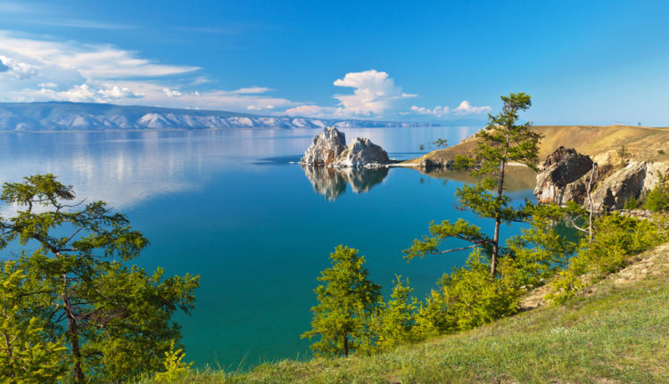

3.Озеро Байкал (Иркутская область, Иркутск)

Величайшее озеро на Земле, российскую святыню иногда называют «лабораторией разнообразия» и крупнейшим в мире хранилищем чистейшей пресной воды. В нем обитает почти 3,000 видов растений, а более 80% из них не встречаются больше нигде. Единственное млекопитающее, живущее в древнем озере, – байкальская нерпа. Несколько лет назад Байкал был официально признан «чудом России». Это самое глубокое, прозрачное и невероятно чистое озеро не Земле. Несмотря на возраст, оно не стареет. Наоборот, его берега постоянно расширяются, и геофизики предполагают, что Байкал – это часть зарождающегося океана. Озеро, окруженное величественными горными хребтами, хранит в своих запасах 20% поверхностных пресных вод. Ледники, даже в невыносимую жару украшающие горные вершины, питают более двухсот рек, впадающих в водоем, но вытекает из него только Ангара. Ученые, исследующие Байкал, давно пришли к выводу, что со временем количество секретов, хранимых его водами, не сокращается, а, напротив, растет. О Байкале и его красоте можно рассказывать часами. Но ничто не сможет сравниться с величественностью и магическим очарованием этой достопримечательности России! Поездка к водному чуду планеты убедит вас в этом!